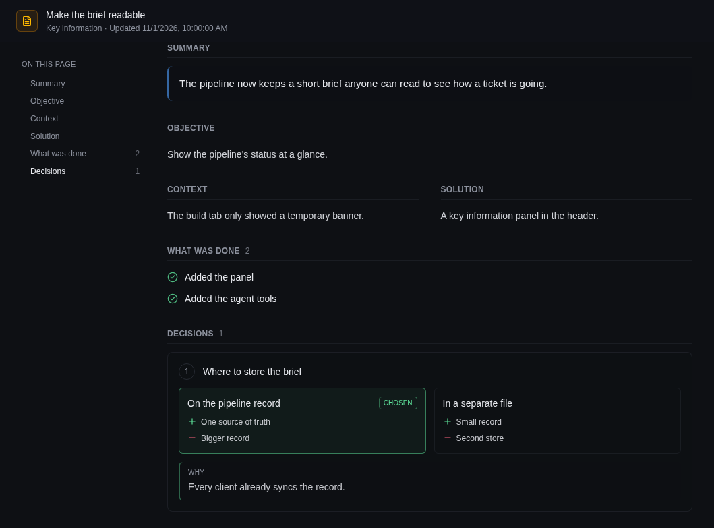
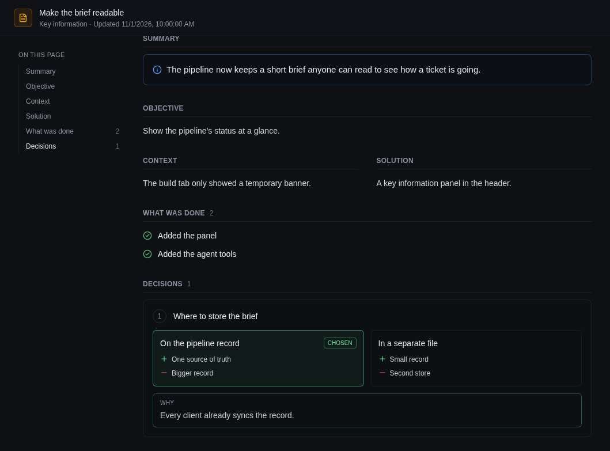
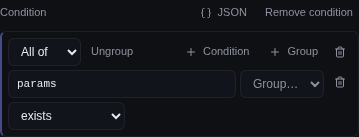
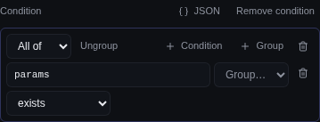
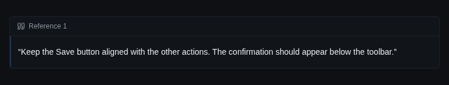
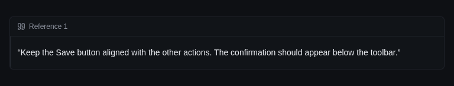

Design tasks / 00016
00016 · Replace thick coloured callout bars with the 1px callout frame
Problem
Callout-like blocks use border-l-2 with a hue: a blue bar on the pipeline
key-information card, an emerald bar on a chosen-option note, an indigo bar on the predicate
editor, and primary-tinted bars on file-part and response-excerpt blockquotes.
Find every instance
grep -rnE --include=*.tsx "border-l-(2|4)" apps/web/src | grep -v "\.test\."Scope
| Where | What |
|---|---|
apps/web/src/components/build-pipeline/PipelineKeyInformationTab.tsx:501
|
blue-400 bar on a card |
apps/web/src/components/build-pipeline/key-information-tab-sections.tsx:161
|
emerald bar on a note |
apps/web/src/components/graph-designer/GraphPredicateEditor.tsx:346
|
indigo bar |
apps/web/src/components/chat/NativeMessage.file-parts.tsx:487 |
primary/30 blockquote bar |
apps/web/src/components/browser/annotations/RequestCard.tsx:603 |
primary/40 blockquote bar |
apps/web/src/components/settings/FullscreenSettingsLayout.tsx:177,
SkillsSettings.tsx:561, AgentPluginsBrowser.tsx:221
|
Keep. Selected-row bars match the documented 2px selection accent |
Approach
-
Convert the colored callout bars to a 1px frame (
borderin the hue at low alpha) with an icon or label, asRichCallout.tsxdoes. -
For plain quotations, a neutral 1px
border-borderbar is acceptable. Record that choice in Notes. - Keep the 2px selected-row bars.
Required evidence: before and after
Every slot needs a before image (captured first, before editing any code) and an
after image. Use the same profile, fixture data, theme, viewport and zoom for both.
Save PNGs under design/images/00016/ using the exact file names shown. See
How to capture.
Pipeline key information card desktop 1440×900
Open a pipeline environment’s Key information tab.


Graph predicate editor desktop 1440×900
Open the graph designer and a predicate.


Transcript file part with quoted content desktop 1440×900
Use a fixture session with a file part.


Out of scope
- Selected-row accent bars.
Verification
mise run test:logged -- --name web-typecheck -- bun run --cwd apps/web typecheck
NODE_ENV=test mise run test:logged -- --name callouts -- bun --cwd=apps/web test src/components/build-pipeline src/components/graph-designer --parallel=2 --only-failures
mise run format:check
mise run lint
React tests in this repo need NODE_ENV=test in build shells. Real-browser
check: use a throwaway dev:test profile named design-00016, never
a production instance.
Acceptance checklist
-
Before images captured on unmodified code for every slot above, and committed
under
design/images/00016/. - After images captured after the change, with the same profile, data, theme, viewport and file names, and committed beside the before images.
- Every image slot on this page shows a picture (the evidence badge reads “6 / 6”).
- I have looked at each pair and written what changed, and anything that did not change that should have, in Notes.
- Hits were classified in Notes, and each decision below is recorded with the option chosen.
-
Type-check and the owning tests pass (commands above);
mise run format:checkandmise run lintpass. - The browser check includes a page reload and, for layout-affecting changes, the narrow viewport.
- DESIGN.md or PRODUCT.md updated if needed: None expected.
- Status set to Done on this page and in the index.
Notes
- Callouts. The pipeline summary, the decision rationale and the predicate group use solid 1px frames at 30% opacity in their existing blue, success and indigo hues. The rationale already used the success token on the baseline. The summary gains an information icon, the rationale keeps its Why label and the predicate group keeps its labeled group selector.
-
Quotations. The transcript reference and annotation response excerpt use
a neutral 1px
border-borderleft rule. Their quote styling preserves the reading hierarchy within the existing enclosing cards. - Other 2px rules. The settings, skills and plugin rows retain their selection accents. The flow-graph connector, the schema nesting guide and the neutral review-resolution inset are outside the colored callout scope.
- Pipeline key information pair. The summary trades its bright left bar for a soft blue outline and information icon. The Why note has a green outline in place of its left bar.
- Predicate editor pair. The indigo frame now runs around the All of group. The condition fields and group controls remain in the same order.
- Transcript file part pair. The Reference header and surrounding card stay in place. The blue quote bar becomes a neutral hairline. The annotation response excerpt uses the same neutral rule.
-
Capture conditions. All three pairs use headless Chromium in the isolated
design-00016profile at 1440×900, dark theme and 100% zoom, with host seeding, agent credentials and the host reachability probe disabled. The before images use unmodified app code atb2c91abb9. The pipeline tab reads a seeded finished pipeline from the profile backend. The predicate is opened in the graph designer. The transcript reference and annotation response were rendered with synthetic text in the real components through a temporary fixture page, without an end-to-end agent turn. Browser checks also covered reload and the 390×844 viewport.